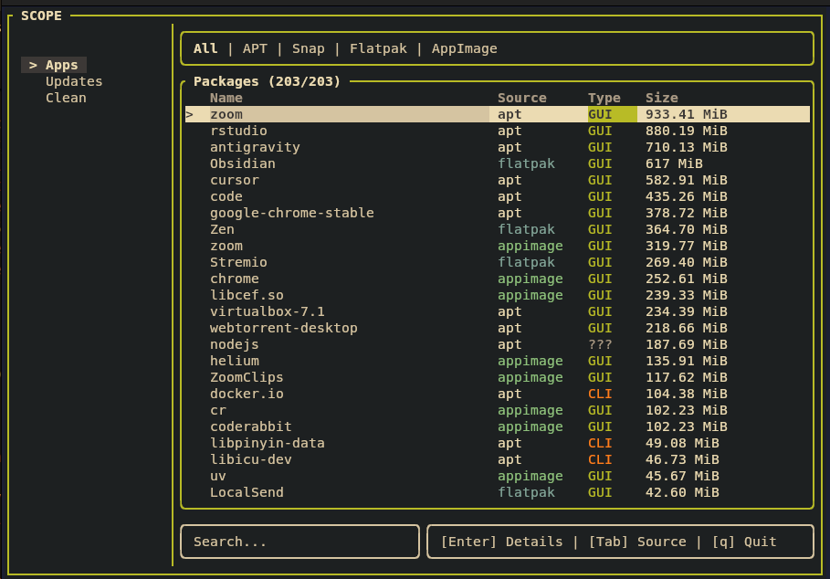

One interface for
all your packages.
A beautiful terminal UI that unifies APT, Snap, Flatpak, and AppImage into a single searchable, navigable view. No more switching between package managers.
Multi-source
APT, Snap, Flatpak, and AppImage — all in one place. Filter by source with a single keystroke.
Real-time search
Fuzzy-match filtering across thousands of installed packages. Results update as you type.
Built in Rust
Fast startup, zero dependencies at runtime. A single static binary you can drop anywhere.

Frequently asked questions
What is Scope?
Scope is a terminal user interface (TUI) application for Linux that unifies multiple package managers — APT, Snap, Flatpak, and AppImage — into a single searchable, navigable view.
Which package managers does Scope support?
Scope supports APT (Debian/Ubuntu), Snap, Flatpak, and AppImage. You can filter packages by source with a single keystroke.
Is Scope free and open source?
Yes. Scope is free and open source software released under the MIT License. The source code is available on GitHub.
How do I install Scope?
Install from source with Cargo: cargo install --git https://github.com/khurrambhutto/scope. Or download a pre-built binary from the GitHub Releases page.
What are the system requirements?
Scope runs on Linux. It is built in Rust and distributed as a single static binary with zero runtime dependencies.